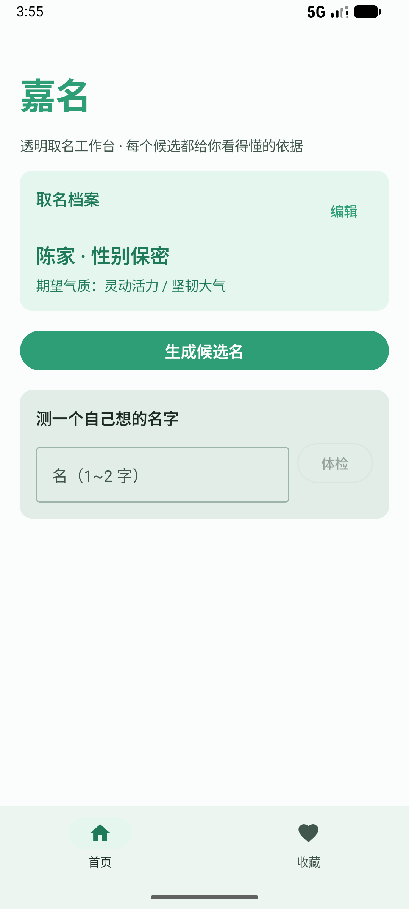
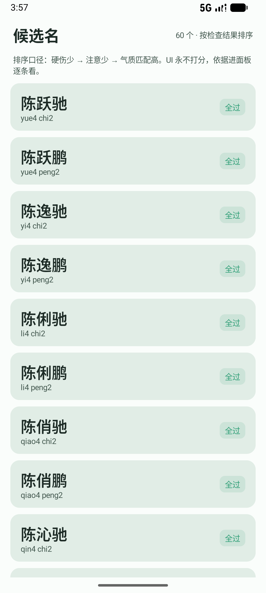
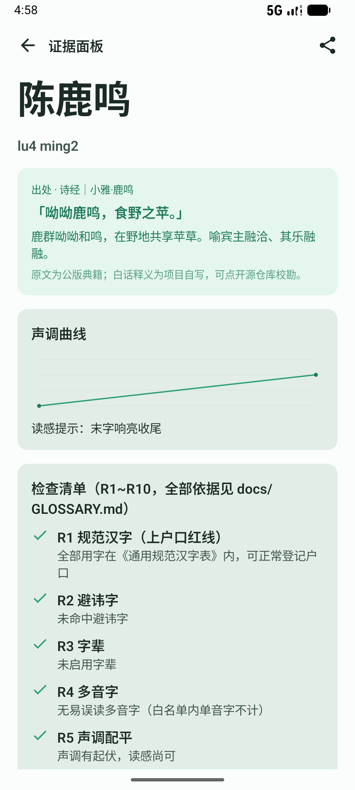
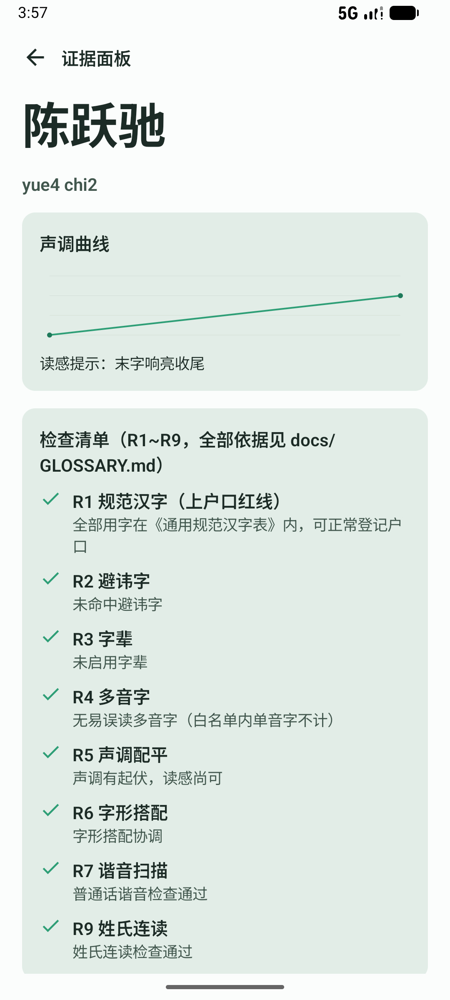
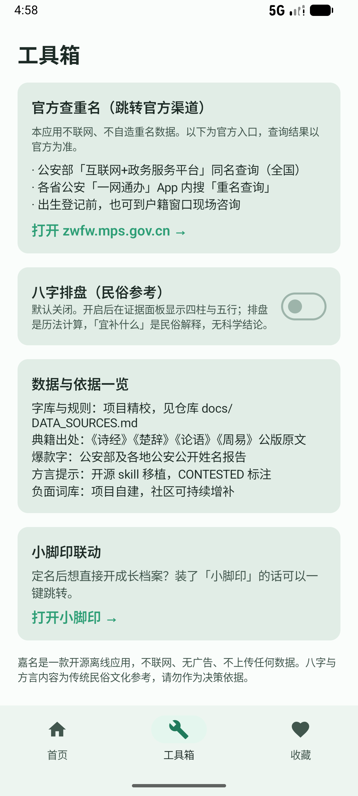

规范汉字表、字音笔画、公版典籍、官方统计是事实；八字宜补什么是观点。核心引擎只用事实和语言学规则，民俗命理全部是默认关闭、带争议标注的可选模块。
竞品把所有名字都打成 95 分再卖解锁。嘉名的每个候选展示 R1~R10 检查的逐条结果：通过了什么、依据是什么、踩了什么雷，全部可点开溯源。
出生日期、籍贯、长辈名讳是敏感信息。全程不申请网络权限；查重名只跳官方渠道，夫妻协作走文件导出导入。
典籍取词（诗经·楚辞·论语·周易，带原文与白话）→ 期望标签组字 → 字库组合，一次生成 60 个候选。
上户口红线、避讳字辈、多音字、声调配平、字形搭配、谐音与姓氏连读、官方爆款降权、家乡话提示。
夫妻双设备各自收藏，文件交换合并；「共同喜欢」视图、家人意见登记、定名标记一应俱全。
出处原文可校勘、声调曲线可视化、检查清单逐条亮灯；一键导出长图发家庭群。
默认关闭。出生后填准时辰才解锁：排盘是确定的历法计算，「宜补什么」强制标注为民俗参考。
只跳转公安部政务平台等官方渠道，不自造重名数据。





市面取名 App 通用的「三才五格」评分，是日本运命学家熊崎健翁 1918 年前后发明的，1929 年成书系统化，1936 年经台湾传入——1918 年之前的中国典籍里零记载。它不是传统，所以嘉名不做，并把理由写进了 GLOSSARY.md。
干支排盘是确定的历法计算（lunar 库）；「缺什么补什么」是解释体系，流派间结论都可能不同。所以八字模块默认关闭、开启有免责、结论强制标注「民俗文化参考，无科学结论支持」。
查重名只跳官方渠道，不编数据；爆款字只引用官方公开报告并注明出处；方言提示做不到精确拟音，就诚实说「请长辈念一遍」。每条数据可溯源，欢迎社区校勘。